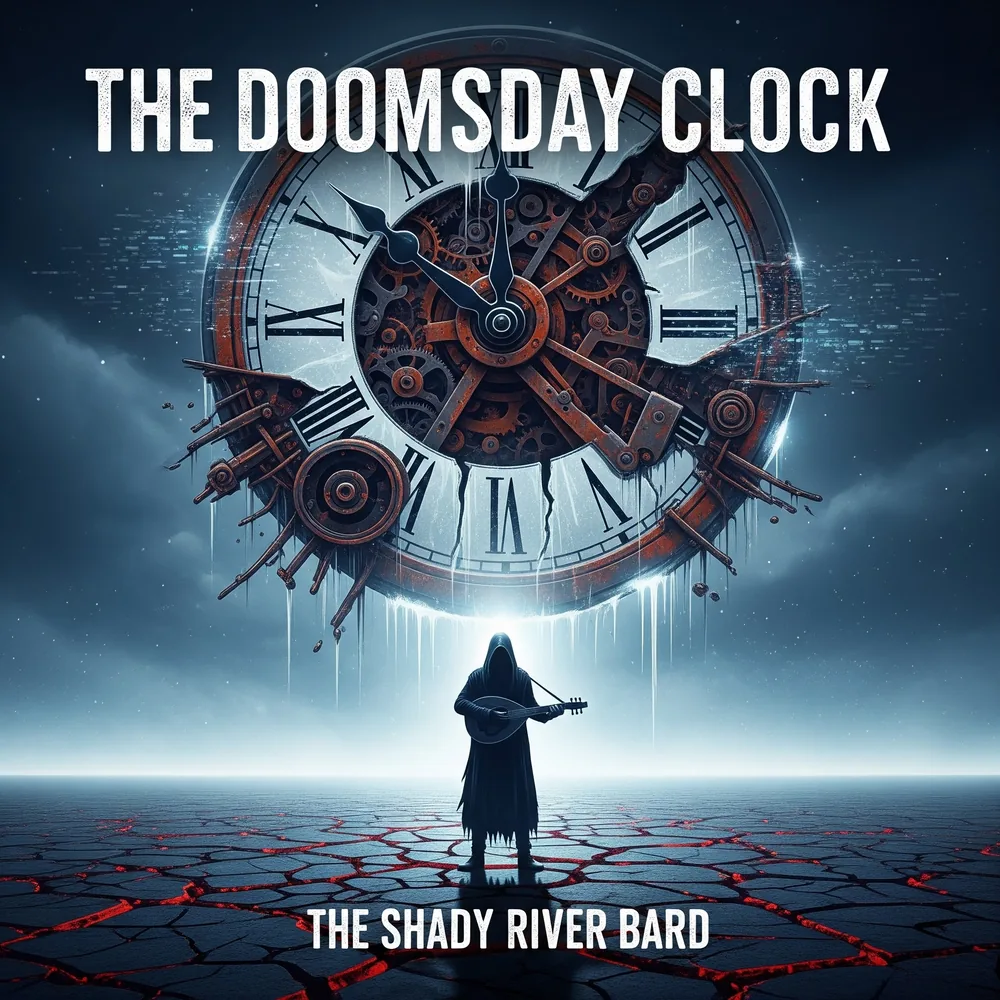

DOOMSDAY CLOCK
An Album Blueprint for Existential Reckoning
“Listen. Before the ticking stops.”
Welcome to Doomsday Clock, the twenty-first album from The Shady River Bard. This is not a work of escapism. It is a work of witness. Conceived as an immersive four-act sonic journey, the album takes its central metaphor from the real-world Doomsday Clock maintained since 1947 by the Bulletin of the Atomic Scientists—measuring our proximity to self-annihilation from the technologies of our own making. Through thirteen movements, the album traces our descent from creeping objectless anxiety to the unvarnished final silence of extinction.
Six Pillars of Existential Peril
The narrative architecture of Doomsday Clock synthesizes six distinct global catastrophic risk vectors. Explore how systemic failure, technological misalignment, ecological thresholds, and psychological fragmentation intertwine across the album's story.
The Four-Act Descent
From creeping modern unease to the ultimate silence of an empty world, the 13 movements unfold in four distinct thematic arcs.
13 Movements, Lyrics & Lore
Filter by Act or browse the complete 61-minute epic with full publishing lyrics and literary commentary.